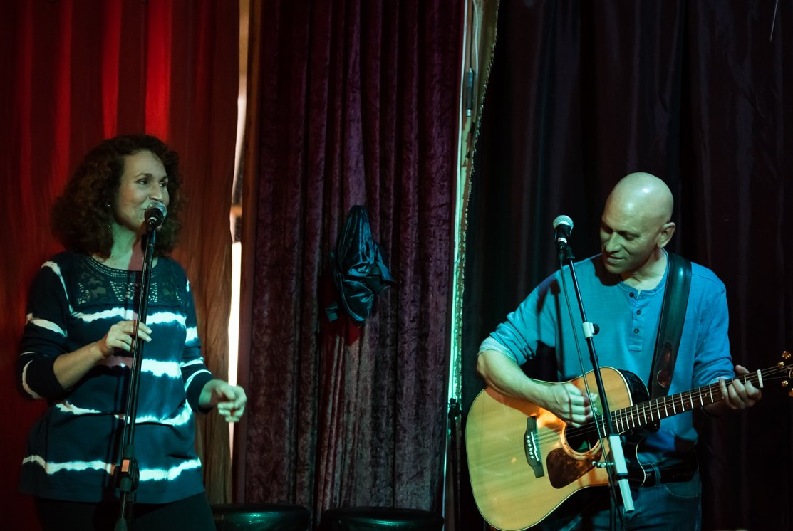
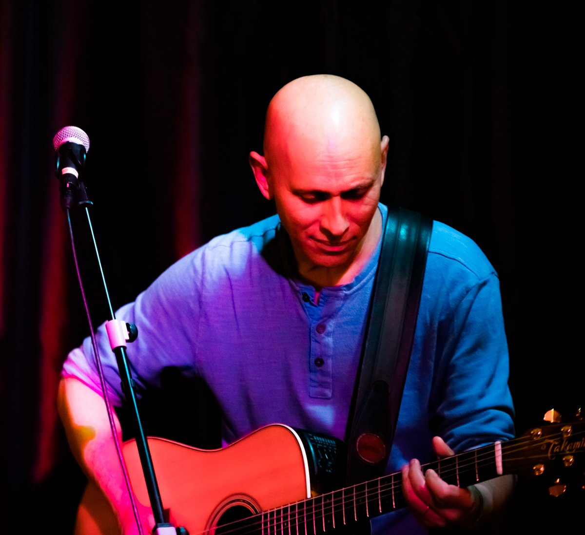

Larry & Mindy
Live performances of songs from the 60s & 70s
We love to sing warm acoustic renditions of beloved songs from the sixties and seventies by wonderful artists such as: Simon and Garfunkel, Carpenters, The Beatles, The Everly Brothers, Bob Dylan, The Eagles, Brothers Four, Pete Seeger, Elvis Presley, Elton John, Peter Paul & Mary, Dusty Springfield, Paul Anka, John Denver, Joan Baez, Neil Sedaka, Carole King, James Taylor, Don McLean, Cliff Richard, Cat Stevens, Leonard Cohen, The Platters and many more…
With over 1000 songs in our repertoire!
Between the fabulous songs, we tell short and amusing background stories — about the period, the songs, and from our personal lives.
About
Mindy
Mindy Fogel was born in New York and grew up in Florida. At 19 she moved to Israel on her own. She performed in a Jewish music group throughout the U.S. and Canada, and later studied nursing and social work at Hebrew University.
She worked as a veterinary technician, an import manager, and later as a freelance translator. Music remained her constant love — she performed at private events and sang Judy Collins, Barbra Streisand, Billy Joel, Rita, the Beatles, and more.
Larry
Larry Fogel was born in Florida and moved to Israel at age 12. He fell in love with the guitar at 11 and discovered folk music in 3rd grade when he first heard Simon & Garfunkel’s “Feelin’ Groovy.”
After the army, Larry performed in well-known Tel Aviv clubs, singing the music of Simon & Garfunkel, Bob Dylan, Don McLean, James Taylor, and more. He later stepped away from performing to build a career in hotel, tourism, and retail management, and to raise a family.
In 2003 he returned to the stage, performing in folk clubs across Israel and at the Jacob’s Ladder Folk Festival. From 2004–2011 he performed in a Simon & Garfunkel tribute show before choosing to focus on performing with Mindy.
Together
Larry and Mindy met in 2006 and quickly began performing together — in Israel and abroad, including at the Isle of Wight Festival in 2008. They released two albums of original music:
- Two Hearts One Beat (2007)
- EBTB (2009)
They married in 2009, built their dream home in the Galilee mountains, and live there with their beloved cat, K.C., surrounded by their spectacular organic garden.
Homepages
📞 Contact Larry and Mindy
054‑6446396 • 050‑5921628
(Phone or WhatsApp)